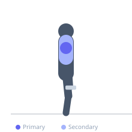

Exercise guide / Lateral Raise
Lateral Raise
The lateral raise is a shoulder isolation exercise that targets the lateral (middle) head of the deltoid through shoulder abduction. It is the most effective direct exercise for building shoulder width and is commonly used as a high-repetition accessory movement in hypertrophy programs.
Primary muscles
deltoid lateral
Secondary muscles
deltoid anterior
trapezius upper
Stabilizers
supraspinatus
Equipment
Dumbbell (Fixed)


Starting position
- Stand with feet shoulder-width apart holding a dumbbell in each hand at the sides of the thighs. Slight forward lean from the hips and a slight bend in the elbows.
Setup
- Use a relatively light weight — the lateral head of the deltoid is a small muscle. Avoid going too heavy, which shifts the movement to the traps.
Steps
- Raise both dumbbells simultaneously out to the sides in an arc.
- Lead with the elbows slightly, with the pinky finger side slightly elevated (internal rotation) to maximize lateral delt activation.
- Raise until arms are roughly parallel to the floor.
- Lower the dumbbells under control back to the starting position.
Coaching cues
- Lead with your elbows, not your hands
- Think about pouring a jug of water at the top — tilt the pinky up slightly
Breathing
- Exhale on the raise, inhale on the descent.
Range of motion
- Raise until upper arms are parallel to the floor. Do not raise significantly above horizontal.
Tempo
- 2-1-3-0
Common mistakes
- Raising too high above parallel, increasing trap involvement
- Using momentum from the torso to swing the dumbbells up
- Keeping palms fully facing the floor — tilt the pinky side slightly up
Safety
- Avoid if experiencing shoulder impingement — the supraspinatus passes through a narrow space during this movement
Training
- hypertrophy: 12–20 reps
- endurance: 20–30 reps
- hypertrophy: 3–5 sets
- endurance: 3–4 sets
- Rest: {'hypertrophy': 60, 'endurance': 30}